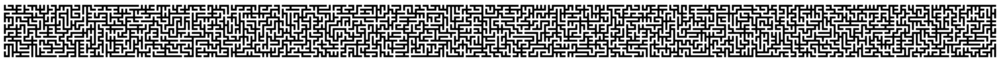

Random Walk Proof of Kirchhoff's Matrix Tree Theorem

Kirchhoff の行列木定理に対して，ランダムウォークを使った証明を与える論文が面白かったので整理する．
行列木定理は，連結グラフにおける全域木の数に関する定理である． よく知られている証明方法は純粋な代数学と Cauchy-Binet の公式によって導くものである． 一方で，arXiv:1306.2059 における証明方法は とてもユニークで「ランダムウォークによってすべての全域木を等確率で生成する Wilson's Algorithm 」を使う． すべての全域木を等確率で生成するのだから，その確率の逆数がグラフにおける全域木の総数と一致する． なので全域木の数を求める問題が「Wilson's Algorithm における全域木 (uniform spanning tree; UST) の生成確率を求める問題」に変わるわけである． その発想はなかった． よく知られる証明方法と違い，この証明に必要なものはランダムウォークを扱うためのマルコフ連鎖とほんの少しの代数学的な操作（Cramer の公式から導き出される等式）である．
おさらい
頂点集合 \( V = \{y_1,y_2,\cdots,y_{n+1}\} \)，辺集合 \( E \) の無向連結グラフ \( \Gamma = (V, E) \) について考える． グラフラプラシアン行列を \( \mathcal{L} = \mathcal{D} - \mathcal{A} \) と定義する． \( \mathcal{D} \) は対角成分がグラフの次数となる次数行列，\( \mathcal{A} \) は隣接行列である． \( \mathcal{L}^{\{k\}} \) を \( \mathcal{L} \) から \(k\) 行 \(k\) 列を取り除いた部分行列とする．
定理: Kirchhoff の行列木定理
\( \Omega = \{ \text{spanning trees of}\; \Gamma \} \) としたとき，
$$ |\Omega| = \det[ \mathcal{L}^{\{1\}} ] = \det[ \mathcal{L}^{\{2\}} ] = \cdots = \det[ \mathcal{L}^{\{n\}} ] = \det[ \mathcal{L}^{\{n + 1\}} ] $$
が成立する．
すなわち，グラフラプラシアンに対して任意の要素に対する行と列を削除し，その部分行列の determinant が全域木の数と一致する． 以降では Wilson's Algorithm を紹介して，ランダムウォークを用いた行列木定理の証明過程を紹介する．
Loop-erased Random Walk (LERW) & Wilson's algorithm
普通の単純ランダムウォーク (SRW) をグラフ上で実行した場合，そのパスはループ（閉路や多重辺）を生成する可能性がある． これに対して，ループ除去ランダムウォーク (LERW) は SRW からループが発生した時系列順にループを除去することで，ループのないパスを生成する．
\( \lambda = (y_1,y_2,\cdots,y_j) \) を無向連結グラフ \( \Gamma = (V, E) \) のパスとする． \( LE(\lambda) \) を SRW でループが発生した時系列順にループを除去したパスとする（LE は loop-erasure の略）． \( LE(\{S_k, k=0,\cdots\}) \) を ループ除去ランダムウォーク (Loop-erased Random Walk; LERW) と呼ぶ．
Wilson's Algorithm
Wilson's Algorithm は LERW によって得た loop-erasure のパスを branch として，これまでに生成した部分木に追加していくことで全域木を生成する．
- 初期の branch を生成: 頂点 \(y_0\), \(y_1\) を選択し，\(y_0\) から \(y_1\) まで LERW を実行する．得たパスを \( \Delta_1\) とする．
- branch の追加: \(\Delta_k\) が与えられたとき，頂点 \(y_{k+1} \in V \setminus \Delta_k\) を選択する． \(y_{k+1}\) から \(\Delta_k\) までの LERW と \(\Delta_k\) の和集合をとり \(\Delta_{k+1}\) とする．
- 繰り返し: \(\Delta_k\) が頂点集合 \( V \) と一致するまで (2) を繰り返す．
全域木の生成仮定を D3.js で可視化した例 を見ると明らかであるが， 全域木を生成するためのアルゴリズムとして実行速度という面では非効率的な方法である． UST を生成するという特異な性質は注目に値するが， いままでに探索した頂点への再訪を許すアルゴリズムとなっているので， \( \Delta_k \) から遠ざかる方向にランダムウォークするとなかなか木が生成されない．
グラフの定義
Wilson's Algorithm における全域木の生成確率を導出するために，グラフ上のランダムウォークと行列を用意する． グラフ \( \Gamma \) 上の SRW を \( \{ S_k, k = 0,1,\cdots \} \) と表記する． このときの遷移確率を以下のように定義する．
$$ P\{ S_1 = y_j | S_0 = y_i \} = p(i, j) $$
ただし \(p(i,j) = \frac{1}{\deg(y_i)}\; \text{if}\; y_i \;\text{is connected to}\; y_j \) ，\(p(i,j) = 0\; \text{if}\; y_i \;\text{is not connected to}\; y_j \) とする．
\( p(i,j)\) を \( i, j\) 成分に持つ transition matrix を \( \mathbb{P} \) と表記する． \( \mathcal{D} \) は対角行列であるため，その逆数を使い \( \mathbb{P} = \mathcal{D}^{-1} \mathcal{A} \) が成り立つ．
おさらいの節でグラフラプラシアン行列を \( \mathcal{L} = \mathcal{D} - \mathcal{A} \) で定義したことを思い出す． 定義からグラフラプラシアン行列は以下のように式変形できる．
$$ \mathcal{L} = \mathcal{D} ( \mathbb{I} - \mathcal{D}^{-1} \mathcal{A}) = \mathcal{D} (\mathbb{I} - \mathbb{P}) $$
ここで \( \Delta \subset V,\; \Delta \neq \emptyset \) としたとき， 任意の行列 \( M \) から \( \Delta \) に対応する行と列を削除して得られる行列を \( M^{\Delta} \) と表記する． このとき，
$$ \mathcal{L}^{\Delta} = \mathcal{D}^{\Delta} (\mathbb{I}^{\Delta} - \mathbb{P}^{\Delta}) $$
が成り立つ． 加えて，生成確率の導出の準備として２つの重要な役割を果たす Fact を導出する．
Fact1: グリーン関数
\( S_0 \equiv x \) としたときのマルコフ連鎖の確率分布を \( \mathbb{P}_{x} \)，その期待値を \(\mathbb{E}_{x} \) と表記する． 最初に \( \Delta \) に到着する時間を \( \xi^{\Delta} \equiv \inf \{n \geq 0 : S_n \in \Delta \} \) と定義する． ランダムウォークで \( \Delta \) に到達するまでにある頂点 \(y\) に到達する回数の期待値 \( G_{\Delta}(x,y) \) を考える．
$$ G_{\Delta}(x,y) = \mathbb{E}_x \biggl[ \sum^{\xi^{\Delta}}_{n=0} \mathbb{1}_{\{y\}}(S_n) \biggr] = \sum^{\infty}_{n=0} \mathbb{P}_x (S_n = y\; \text{and}\; \xi^{\Delta} \gt n) $$
2番目の項は「時間 \( n \) に頂点 \( y \) にいる」ことを示す指示関数 \(\mathbb{1}_{\{y\}}(S_n)\) を使い期待値で表記している．3番目の項は確率の和によって期待値との等式が成立している．
\( y \notin \Delta \) であるため，右辺の確率分布 \( \mathbb{P}_{x} \) は \( \Delta \) に対応する行と列を取り除いた遷移行列の部分行列 \(\mathbb{P}^{\Delta} \) で置き換えることができる． すなわち，
$$ \sum^{\infty}_{n=0} \mathbb{P}_x (S_n = y\; \text{and}\; \xi^{\Delta} \gt n) = \sum^{\infty}_{n=0} ( \mathbb{P}^{\Delta} )^n_{xy} $$
右辺の無限級数は，線形代数の初等的な結果から逆数の項への式変形ができる．
$$ \sum^{\infty}_{n=0} ( \mathbb{P}^{\Delta} )^n_{xy} = ((\mathbb{I} - \mathbb{P})^{\Delta})^{-1}_{xy} $$
これは，
$$ (\mathbb{I} - \mathbb{P}^{\Delta}) \color{#F44}{\sum^{\infty}_{n=0} (\mathbb{P}^{\Delta} )^n} = (\mathbb{I} - \mathbb{P}^{\Delta}) \color{#F44}{((\mathbb{P}^{\Delta})^0 + (\mathbb{P}^{\Delta})^1 + \cdots)} = (\mathbb{I} + \mathbb{P}^{\Delta} + (\mathbb{P}^{\Delta})^2 + \cdots) - (\mathbb{P}^{\Delta} + (\mathbb{P}^{\Delta})^2 + \cdots) = \mathbb{I} $$
に対して，両辺に左から \( ((\mathbb{I} - \mathbb{P})^{\Delta})^{-1} \) をかけることで得ることができる．
これらの結果から 「ランダムウォークで\( \Delta \) に到達するまでにある頂点 \(y\) に到達する回数の期待値」を成分に持つ行列を \( \mathbb{G}^{\Delta} = [ G_\Delta (x,y)]_{x,y \in V \setminus \Delta} \) としたとき，
$$ \mathbb{G}^{\Delta} = (\mathbb{I}^{\Delta} - \mathbb{P}^{\Delta})^{-1} $$
また， \( r_\Delta(x) \) を \( x \) から SRW をはじめて，\( \Delta \) に到達する前に \( x \) に戻る確率 \( r_\Delta(x) \equiv \mathbb{P}_x(\tau^{(1)}_x \lt \xi^{\Delta}) \) としたとき，
$$ G_{\Delta}(x,x) = \sum^{\infty}_{k=0} r_{\Delta}(x)^k = \frac{1}{1 - r_{\Delta}(x)} $$
Fact2: Cramer の公式
Cramer の公式は，
$$ (M^{-1})_{ii} = \frac{\det[M^{\{i\}}]}{\det[M]} $$
ここから帰納法によって，ただちに以下の等式を導くことができる．
$$ \det[M]^{-1} = \det[M^{-1}] = \prod^{N}_{j=1} (M^{\Delta_j})^{-1}_{\sigma(j)\sigma(j)} $$
(なお \( (\sigma(1),\cdots,\sigma(N)) \) は \( (1,\cdots,N) \) の permutation. 任意の順番で削除できるため)
Wilson's Algorithm によって全域木を生成する確率
\( \Delta \subset V,\; \Delta \neq \emptyset \) とする． いま \( V \setminus \Delta \) の連結した distinct element を \( x_1, \cdots, x_K \) とし， \( x_j \sim x_{j+1}\;\text{for}\;j=1,\cdots,K \) とする．\(x_{K+1} \in \Delta \) とする． 頂点 \( x_1 \) からグラフ \( \Gamma \) 上を LERW することを考える．
差集合 \( V \setminus \Delta \) のすべての頂点に訪問し， \( K + 1 \) で \( \Delta \) に到達するようなパスを考える． LERW によって特定の経路を遷移する確率 を以下のように表記する．
$$ P^{\Delta} (x_1,\cdots,x_K,x_{K+1}) := P\{\;LE(\{S_j, j=0,\cdots,\xi^\Delta\})\ = [x_1,\cdots,x_K,x_{K+1}]\; \} $$
\( [x_1,\cdots,x_K,x_{K+1}] \) は Loop-erasure によるパスであることから，明らかにループのないパスとなっている． \( \Delta \) まで LERW するという操作は，Wilson's Algorithm の branch を追加する操作に対応する．この手続きを分解すると，以下のようになる：
- \( x_1 \) から 0 回以上 \( x_1 \) へ loop back (\( x_1 \) に戻る回数を \( m_1 \) とする)
- \( x_1 \) から \( x_2 \) へ \( p(x_1, x_2) \) で遷移
- \( x_2 \) から 0 回以上 \( x_2 \) へ loop back (\( x_2 \) に戻る回数を \( m_2 \) とする)
- \( x_2 \) から \( x_3 \) へ \( p(x_2, x_3) \) で遷移
- 以下，同様の手続きを \( K+1 \) に到達するまで繰り返す
この手順を定式化すると \( P^{\Delta} (x_1,\cdots,x_K,x_{K+1}) \) は以下のように書ける．
$$ P^{\Delta} (x_1,\cdots,x_{K+1}) = \sum^{\infty}_{m_1,\cdots,m_K=0} r_{\Delta}(x_1)^{m_1} \color{#F44}{p(x_1,x_2)} r_{\Delta \cup \{x_1\}}(x_2)^{m_2} \color{#F44}{p(x_2,x_3)} \cdots $$
$$ \cdots r_{\Delta \cup \{x_1,\cdots,x_{K-1}\}}(x_K)^{m_K} \color{#F44}{p(x_K,x_{K+1})} $$
loop back する回数は \( m_j \) とおき，すべての loop back 回数の組み合わせで確率を計算し，その和をとっている．
表記を簡略化するために \( \Delta(1) = \Delta \) であり \( j = 2,\cdots,K \) に対して \( \Delta(j) = \Delta \cup \{x_1,\cdots,x_{j-1}\}\) であるとする． すると \( r_{\Delta \cup \{x_1\}} \) を \( r_{\Delta(1)} \) と記述できるようになるので，上式は以下のように変形できる．
$$ = \prod^{K}_{j=1} \biggl[ \color{#F44}{\frac{1}{\deg(x_j)}} \sum^{\infty}_{m_j = 0} r_{\Delta(j)}(x_j)^{m_j} \biggr] $$
$$ = \prod^{K}_{j=1} \color{#F44}{\frac{1}{\deg(x_j)}} \frac{1}{1 - r_{\Delta(j)}(x_j)} $$
$$ = \prod^{K}_{j=1} \color{#F44}{\frac{1}{\deg(x_j)}} G_{\Delta(j)} (x_j, x_j) $$
先に述べたとおり，\( P^{\Delta} (x_1,\cdots,x_{K+1}) \) は branch を追加する操作に他ならない． これを各 branch に対しても同様に計算し，積をとることで全域木の生成確率を求めることができる． したがって，Wilson's Algorithm が tree \( \mathcal{T} \) を生成する確率は，
$$ P(\mathcal{T}\; \text{is generated by Wilson's algorithm}) = \prod^{L}_{l=1} P^{\Delta^l} (x_{l,1},\cdots,x_{l,k_l}) = \prod^{L}_{l=1} \prod^{k_l-1}_{j=1} \frac{G_{\Delta^l(j)} (x_{l,j}, x_{l,j}) }{\deg(x_{l,j})} $$
この等式は Lawler によって証明された結果である[1]． この確率は先に用意した Fact を使い，さらに簡潔にできる．
Determinant を使った式に変形
先に述べた \( \;\mathbb{G}^{\Delta} = (\mathbb{I}^{\Delta} - \mathbb{P}^{\Delta})^{-1} \) と \( \;\mathcal{L}^{\Delta} = \mathcal{D}^{\Delta} (\mathbb{I}^{\Delta} - \mathbb{P}^{\Delta}) \; \) を思い出す．線形代数の結果 (Fact2) から，
$$ \det[\mathbb{G}^{\{v\}}] = \prod^L_{l=1} \prod^{k_l - 1}_{j=1} G_{\Delta^l(j)} (x_{l,j}, x_{l,j}) $$
$$ \det[\mathcal{D}^{\{v\}}] = \prod^L_{l=1} \prod^{k_l - 1}_{j=1} \deg(x_{l,j}) $$
これらの結果を使い，
$$ P(\mathcal{T}\; \text{is generated by Wilson's algorithm}) = \frac{\det[\color{#F44}{\mathbb{G}^{\{v\}}}]}{\det[\mathcal{D}^{\{v\}}]} = \frac{1}{\det[\mathcal{D}^{\{v\}}] \det[\color{#F44}{\mathbb{I}^{\{v\}} - \mathbb{P}^{\{v\}}}]} = \det[\mathcal{L}^{\{v\}}]^{-1} $$
最初の等式で Lawler の結果と直前の式， 次に \( \mathbb{G}^{\Delta} \) の式と行列式の乗法性， 最後に \( \mathcal{L}^{\Delta} \) の式と行列式の乗法性を使う． 生成される全域木は UST であることから，生成確率は全域木の数の逆数となる．したがって，
$$ P(\mathcal{T}\; \text{is generated by Wilson's algorithm}) = \det[\mathcal{L}^{\{v\}}]^{-1} = \frac{1}{|\Omega|} $$
得られた結果は任意の頂点からスタートして成立するため，行列木定理は \( v \) に各頂点をあてはめることで即座に得ることができる．
Reference
Random Walk Proof に関わる話は arxiv にアップされた論文 [2] の著者のスライド [3] を参考にして構成している． 基本的には原文と同様の式展開をするが，個人的にわかりづらかった部分はいくらか補足や変更を加えている（グリーン関数，LERW を使った説明，記号の整理）． 元の論文と異なり，確率分布には \( \mathbb{P}_x \) を使い，遷移確率には \( \mathbb{P} \) を使い，マルコフ連鎖の状態を \( S_k \) に統一している．
- [1] G. F. Lawler and V. Limic, Random Walk: A Modern Introduction. Cambridge University Press, 2010.
- [2] Michael J. Kozdron, Larissa M. Richards and Daniel W. Stroock, Determinants, their applications to Markov processes, and a random walk proof of Kirchhoff's matrix tree theorem, Preprint, 2013. Available online at arXiv:1306.2059.
- [3] A random walk proof of Kirchhoff’s matrix tree theorem